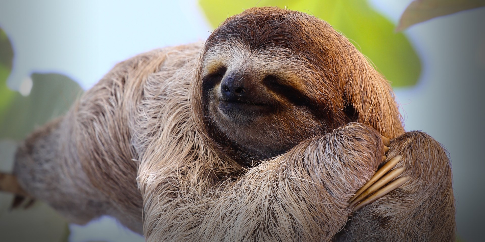

- What is your name?
Carol Hsu, my English name. I also have a Chinese name that is written as 許庭瑋
- Where are you from?
Taipei, Taiwan.
- How old are you?
17 years old, I’m actually turning 18 years old in a month.
- When is your birthday?
It’s coming pretty soon…8/16.
- How do you want to celebrate your 18th birthday?
I want to announce this Self-declaration: I want to tell everyone that I really want to explore the world, be friends with many people, enjoy every moment I have on Earth. Although I might appear shy and reserved, sometimes a bit clumsy in terms of social interactions (because I don’t know how and why people behave in a certain way), I am getting there. It is my motivation to work hard, and I am willing to try my best at all times. So please give me time and patience to learn and catch up, ok?
- What is your hobby?
To read, write, and to watch anime. (These are my “static” hobbies)
I also like to practice yoga, and occasionally some zumba (these are my dynamic hobbies)
- What can you say about your hobbies in common?
Well, I guess I am profoundly interested in stories-telling, I am eager to know stories of others. In return, I also enjoy telling stories, whether they are about myself, or about others whom are closely related to me. That’s why I am interested in all kinds of story-telling, whether it’s through writing, drawing, or designing website.
As for my dynamic hobbies, I enjoy practice them because they help me to strengthen my muscles and maintain my flexibility, in a less intensive and demanding manner. Since I am a static person, it is very important for me to keep balance between stationary and dynamics.
- If I am an animal, what would I be? Why?

My mom always call me a sloth, because I am always slow in motion, and this drives her crazy. In fact, I agree with her. I am a slow person that likes to be quite, and takes things easy. Also, the extremely slow, nearly static motions of a sloth resembles the attribute of peace, and that’s something I am constantly yearning. So, I guess I am a sloth.
- What do you do when you're extremely tired/ when you run out of energy?
I stare blankly at the wall, can’t speak. If you do ask me questions, it might take a few seconds for me to answer. When I’m staring at the wall, another thing that I do is I will start to be “mindful” on my breathe, I observe it. Though this may not be a common option for people, being mindful to my brethe helps me to restore energy to a certain extent. So, next time if you see me staring at the wall, I’m probably just resting and restoring energy, instead of being gloomy or depressed.
- What is my favorite movie? Which one do I want to recommend?
My favorite movie is The Legend of 1900s, I want to recommend because while it is a heart-breaking movie, it also reveals deep philosophical thoughts, as in the conflict between constraints and one’s will to choose. After watching the movie, you would begin to contemplate if the choices you are confident with constraint you or gives you freedom. Besides the philosophy, the piano songs played by the main character are sentimental and heartfelt, you would be able to relate and immerse into his inner world, feel his emotion and rational struggle within the movie.
- If you had to be off the grid of 3 days, what would you do?
I’m going to go deep into the mountains, live in a cabin that has constant food supply and meditate, practice yoga. During the practices, if emotions stir up, I would just observe them, and if necessary, drain them off in any ways (dancing, shouting, screaming) etc.
If there's still anything that you would like to known but is not on this webpage, feel free to ask me in person :)